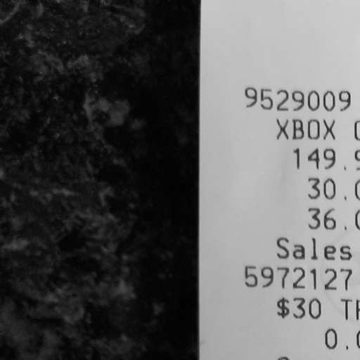
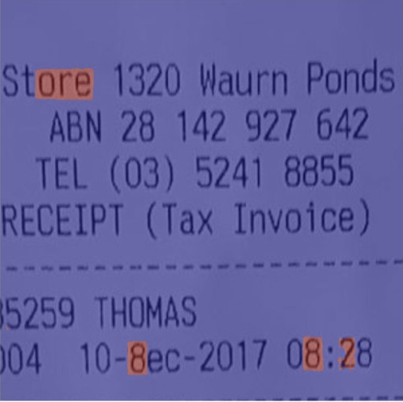
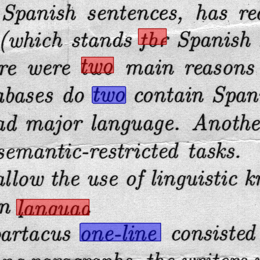

Copy–move
From another field on the same page
British Machine Vision ConferenceLancaster, UK · 23–26 November 2026
JPEG-Induced Structural Bias in
Document Tampering Detection



Two changed digits in a receipt’s date and time



Marked pixels
Wong et al., ICCV 2025 supplement, Figure B · DocTamper example


BMVC paper · Figure 1(a) · Aligned edits in red, standard edits in blue, predictions in green


BMVC paper · Figure 1(b) · Green marks detector predictions